Zhicheng LiuPh.D. Candidate, Southeast University, ChinaOffice: Room 5318, China Wireless Valley, Nanjing Email: 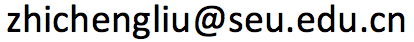 CV • GitHub • Google Scholar • Linkedin |
About Me
- I am a Ph.D. Candidate at the School of Information Science and Engineering, Southeast University, co-supervised by Prof. Qiao Wang (Data Science) and Prof. Junyan Yang (Urban Planning). From Nov. 2018 to Oct. 2019, I was visiting scholar at New York University working with Prof. Claudio Silva in NYU VIDA Lab.
- My general research area is on applied machine learning and data science for urban systems. Focuses on spatio-temperal analysis, probabilistic modeling, non-Euclidean structured data representation learning and graph mining. Applications include urban mobility, logistics, urban planning, real estates, epidemiology and urban data management.
- I have closely worked with domain experts, such as urban planners, architects, economists and transportation specialists. I enjoy formulating their domain problems and insights into mathematical problems or excutable engineering process. I have led data science team participating in governmental urban planning projects over 10 cities in China including Shanghai, Guangzhou, Shenzhen, Nanjing.
- I have published on refereed journal, such as IEEE TKDE, and refereed conference proceedings, such as AAAI, IEEE BigData.
- During my Ph.D. studies, I completed internships at City Brain Lab of Alibaba DAMO Academy, Shanghai FusionTree (MIT Startup) and YIK Data Analytics (Startup).
Selected Projects and Publications
| 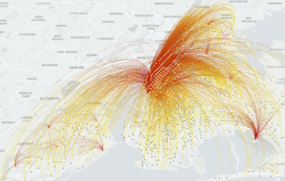 | Zhicheng Liu, Fabio Miranda, Xiaosu Ma, Weiting Xiong, Junyan Yang, Claudio T. Silva, Qiao Wang, Trip Distribution Modeling by Graph Neural Network IEEE Transactions on Intelligent Transportation Systems(IEEE T-ITS), 2020 [Under Review] |
| 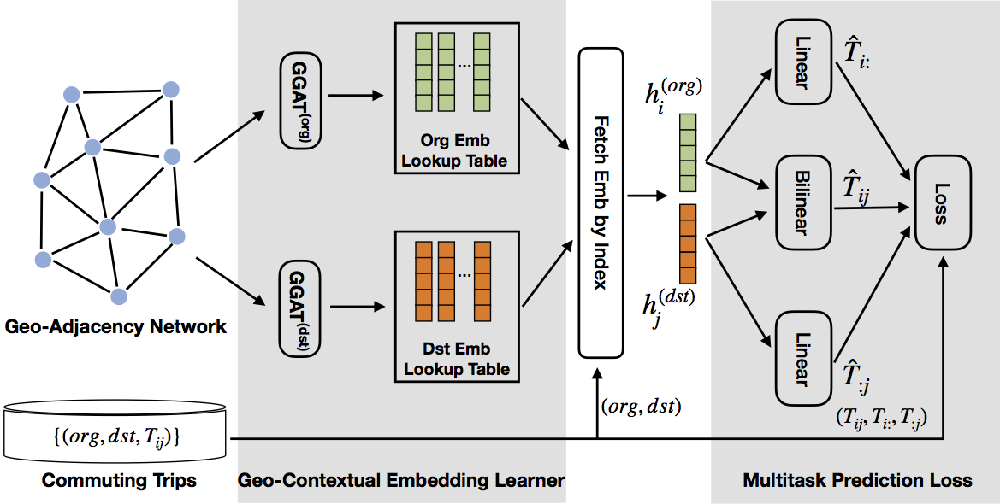 | Zhicheng Liu, Fabio Miranda, Weiting Xiong, Junyan Yang, Qiao Wang, Claudio T. Silva Learning Geo-Contextual Embeddings for Commuting Flow Prediction AAAI Conference on Artificial Intelligence (AAAI), 2020 [PDF] |
| 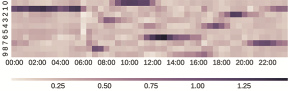 | Zhicheng Liu, Jun Cao, Junyan Yang, Qiao Wang Discovering dynamic patterns of urban space via semi-nonnegative matrix factorization IEEE International Conference on Big Data (Big Data), 2017 [Link] |
| 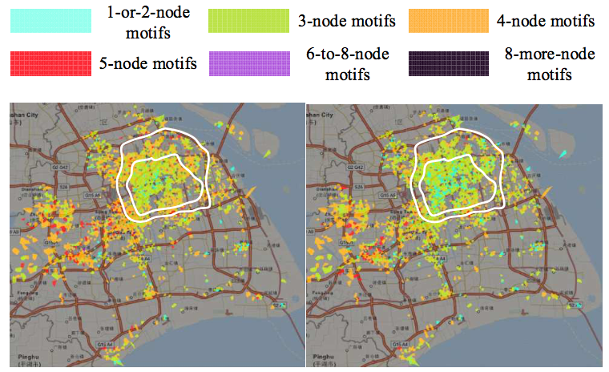 | Zhicheng Liu, Jinbin Yu, Weiting Xiong, Jian Lu, Junyan Yang, Qiao Wang Using mobile phone data to explore spatial-temporal evolution of home-based daily mobility patterns in Shanghai International Conference on Behavioral, Economic and Socio-cultural Computing (BESC), 2016 [Link] |
| 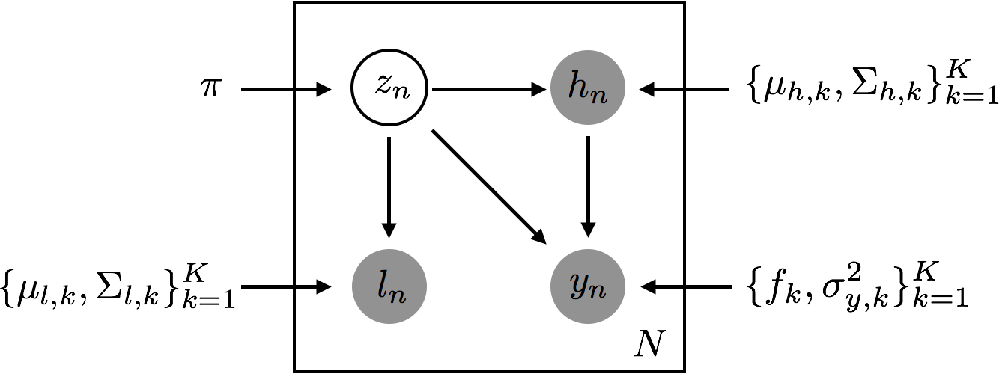 | Zhicheng Liu, Jun Cao, Renjie Xie, Junyan Yang, Qiao Wang Modeling Submarket Effect for Real Estate Hedonic Valuation: A Probabilistic Approach IEEE Transactions on Knowledge and Data Engineering (IEEE TKDE), 2020 [Link] |
| 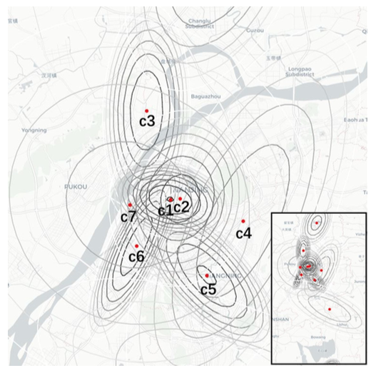 | Zhicheng Liu, Shuai Yan, Jun Cao, Tanhua Jin, Jiabo Tang, Junyan Yang, Qiao Wang A Bayesian Approach to Residential Property Valuation Based on Built Environment and House Characteristics IEEE International Conference on Big Data (Big Data), 2018 [Link] |
| 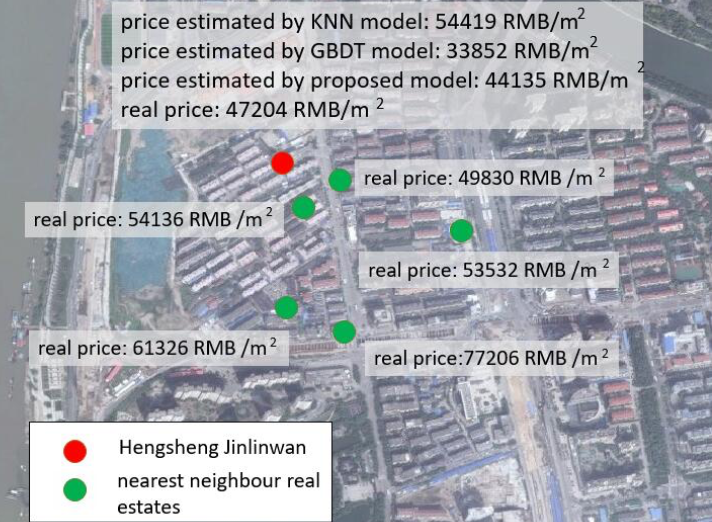 | Jiabo Tang, Zhicheng Liu, Yuran Wang, Junyan Yang, Qiao Wang Using Geographic Information and Point of Interest to Estimate Missing Second-Hand Housing Price of Residential Area in Urban Space IEEE International Smart Cities Conference (ISC2), 2018 [Link] |
| 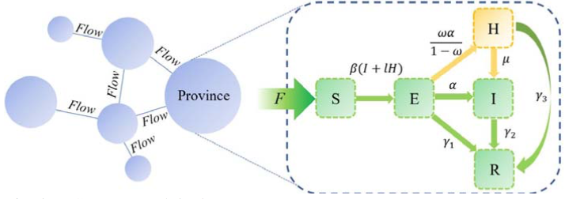 | Qinghe Liu, Zhicheng Liu, Deqiang Li, Zefei Gao, Junkai Zhu, Junyan Yang, Qiao Wang Assessing the Tendency of 2019-nCoV (COVID-19) Outbreak in China medRxiv:2020.02.09.20021444, 2020. [Link] |
| 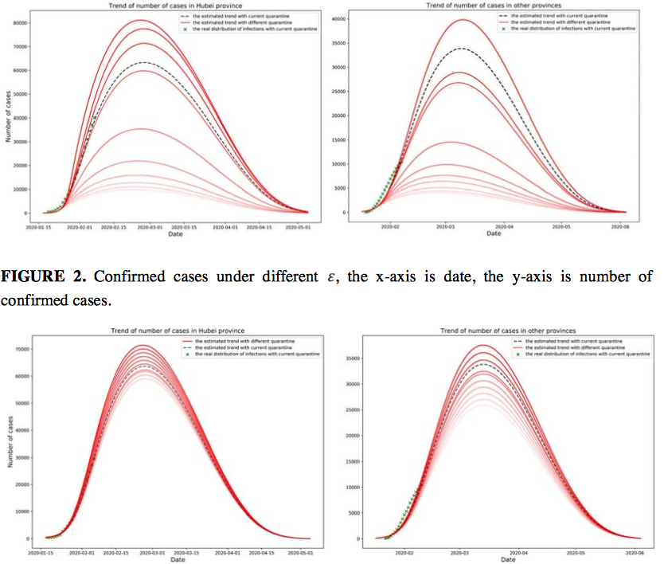 | Deqiang Li, Zhicheng Liu, Qinghe Liu, Zefei Gao, Junkai Zhu, Junyan Yang, Qiao Wang Estimating the Efficacy of Traffic Blockage and Quarantine for the Epidemic Caused by 2019-nCoV (COVID-19) medRxiv:2020.02.14.20022913, 2020. [Link] |
| 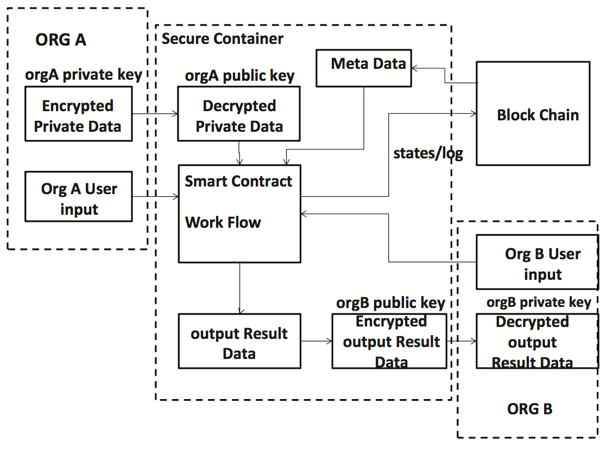 | Yuming Qian, Zhicheng Liu, Junyan Yang, Qiao Wang A Method of Exchanging Data in Smart City by Blockchain IEEE International Conference on Smart City (HPCC/SmartCity/DSS), 2018 [Link] |
| Go to Google Scholar for full publication list |
Personal Interests
- Hiking, Soccer player (position: striker), Bruce harmonica player